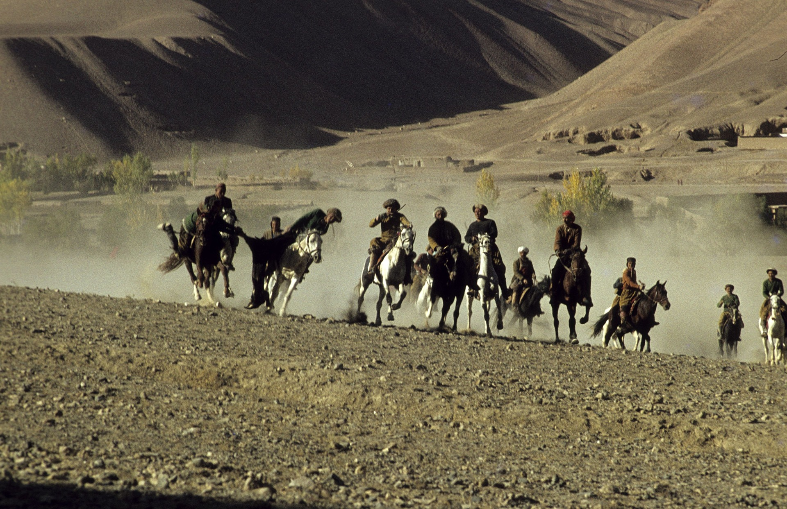
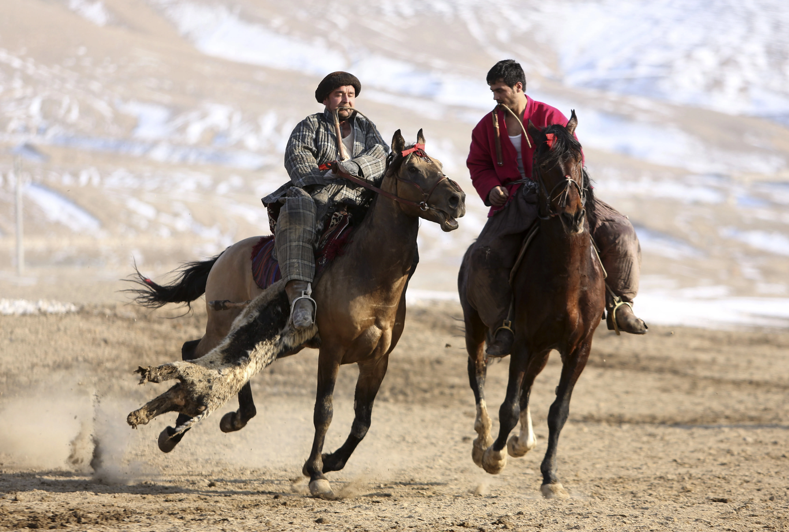
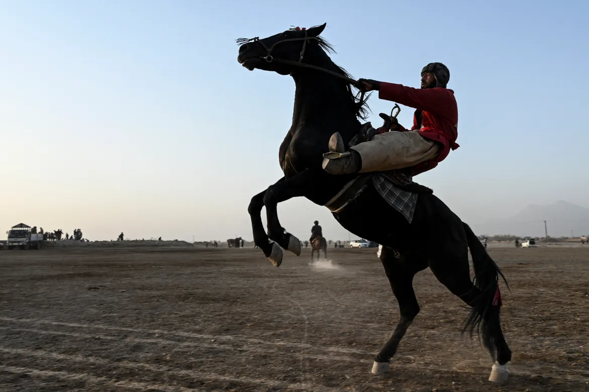
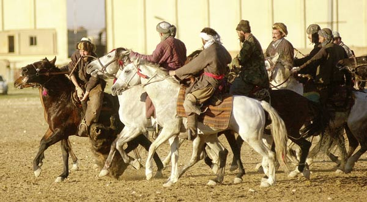

The Famous World of Buzkashi
Buzkashi (also spelled bozkashi or kok-boru) is a traditional equestrian team sport played in Central Asia, particularly in Afghanistan, Tajikistan, Uzbekistan, Kyrgyzstan, and Kazakhstan. The game involves two teams of horse-mounted players competing to score points by capturing a headless goat or calf carcass and carrying it towards a goal. The objective of the game is to move the carcass towards the opposing team's goal while riding a horse, and drop it within a designated circle to score a point. The carcass, which can weigh up to 50 kilograms, is initially placed at the center of the field. The players then try to grab the carcass and carry it away while fending off the opposing team's attempts to take it.
Bozkashi is a fast-paced and physically demanding sport that requires both skill and strength. Players must be skilled horsemen and able to handle the weight of the carcass while on horseback. The game can be quite dangerous, as players often fall from their horses or collide with each other while trying to gain control of the carcass. Bozkashi has a long history and cultural significance in Central Asia, where it is often played at festivals and special occasions. It is considered a test of courage and strength, and is popular among both spectators and participants.
The Origin of Buzkashi
The origins of Buzkashi are not entirely clear, as the sport has a long and complex history that spans several centuries and different cultures in Central Asia. However, it is believed to have originated in the nomadic tribes of Central Asia, where it was practiced as a way to train young warriors for battle. The game has been played in various forms and under different names throughout Central Asia and parts of the Middle East for centuries. In Afghanistan, where it is the national sport, Buzkashi dates back to the era of Genghis Khan and the Mongol Empire. It was also popular among the Turkic-speaking nomads of Central Asia, including the Kyrgyz, Kazakhs, and Uzbeks..
The Rules of Buzkashi
The game is played on a large, open field, with two goals placed at opposite ends of the field. Each team consists of several horse-mounted players, who compete to carry a headless goat or calf carcass towards the opposing team's goal. The game begins with a "maulaw" or "mijgol" (a group of riders) competing for the carcass at the center of the field. The player who is able to grab the carcass and ride away with it is considered the winner of the "maulaw." The player who wins the "maulaw" carries the carcass towards the opposing team's goal, while the other players on his team try to protect him from the opposing team's players. The opposing team's players attempt to steal the carcass away from the player carrying it and carry it towards their own goal. A point is scored when a player carrying the carcass is able to drop it within a designated circle around the opposing team's goal. The game continues until a pre-determined number of points are scored, or a pre-determined amount of time has elapsed. There are few formal rules in Buzkashi, but players are expected to avoid dangerous collisions and abide by basic principles of fair play.
Competitions for Buzkashi
Buzkashi is played at various levels, from informal community matches to organized tournaments and competitions. Some of the most popular competitions include:
National Buzkashi Competitions: Many countries in Central Asia, such as Afghanistan, Tajikistan, and Uzbekistan, hold national competitions to determine the best Buzkashi teams and players. These competitions typically feature multiple rounds of matches, with the winners advancing to the next round until a champion is crowned. International Buzkashi Competitions: There are also several international Buzkashi competitions held each year, which bring together the best players from different countries. The World Buzkashi Championship, held every two years, is one of the most prestigious international Buzkashi tournaments. Local Matches and Festivals: Buzkashi is also a popular pastime at the local level, with many communities hosting matches and festivals throughout the year. These events may feature informal matches between neighboring villages, as well as traditional music, food, and other cultural activities. Military Buzkashi: In some countries, Buzkashi is also played as a training exercise for military personnel, as it helps to develop the physical and strategic skills needed for combat. Military Buzkashi competitions are typically more intense and physically demanding than civilian matches.